Neste blocos de exercícios você vai utilizar o pacote ggplot2 para construir os seguintes gráficos:
Gráfico de barras (barplot)
Histograma (histogram)
Diagrama de caixa (boxplot)
Gráficos de dispersão (scatter plot)
Séries temporais (time series)
Pacotes necessários
Para fazer estes exercícios, acione os pacotes a seguir:
Caso ainda não tenha instalado os pacotes, use:
Primeiro bloco de exercícios
Banco de dados
Entre os exercícios 1 e 8, o banco de dados starwars vai ser empregado. starwars contém características de 87 personagens da franquia criada por George Lucas.
Para saber mais sobre esses dados, utilize:
?starwars
Para dar uma olhada nas variávies dos bancos de dados, você pode utilizar o comando a seguir:
glimpse()
Tente executar a função glimpse() no banco de dados starwars.
Exercício 1
Reproduza o seguinte gráfico:
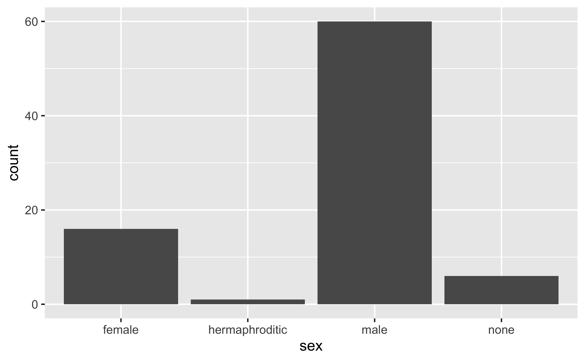
Dica
drop_na()
Exercício 2
Modifique o gráfico do exercício anterior, de modo que ele fique como na imagem a seguir:
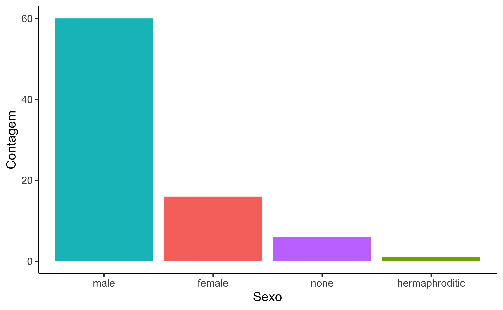
Dica
fct_infreq()fill=labs()theme_classic()theme()
Exercício 3
Refaça o gráfico a seguir:
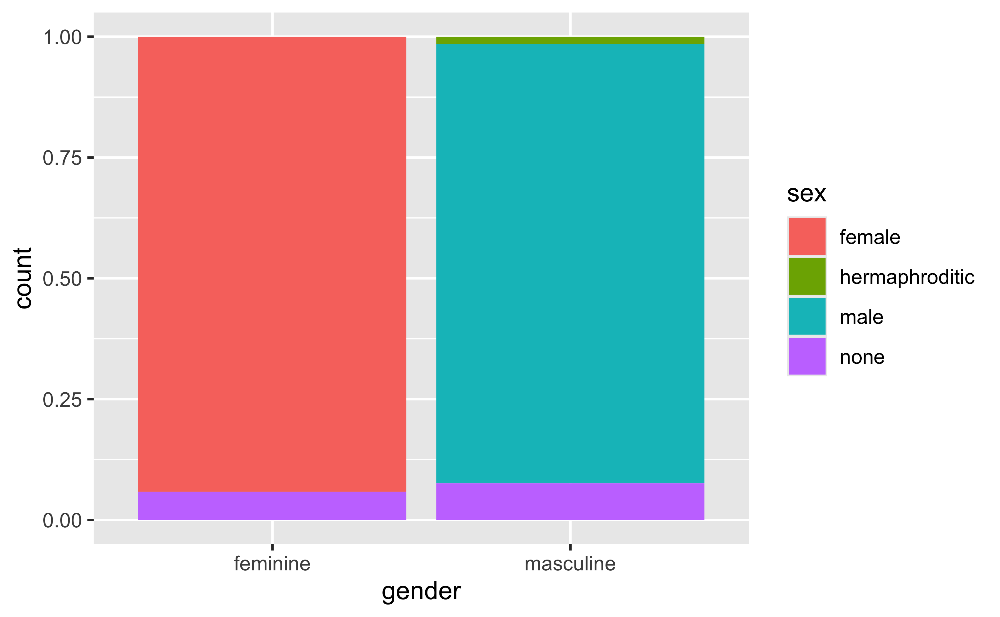
drop_na()fill =position =
Exercício 4
Modifique o gráfico do exercício anterior, de modo que ele fique como na imagem a seguir:
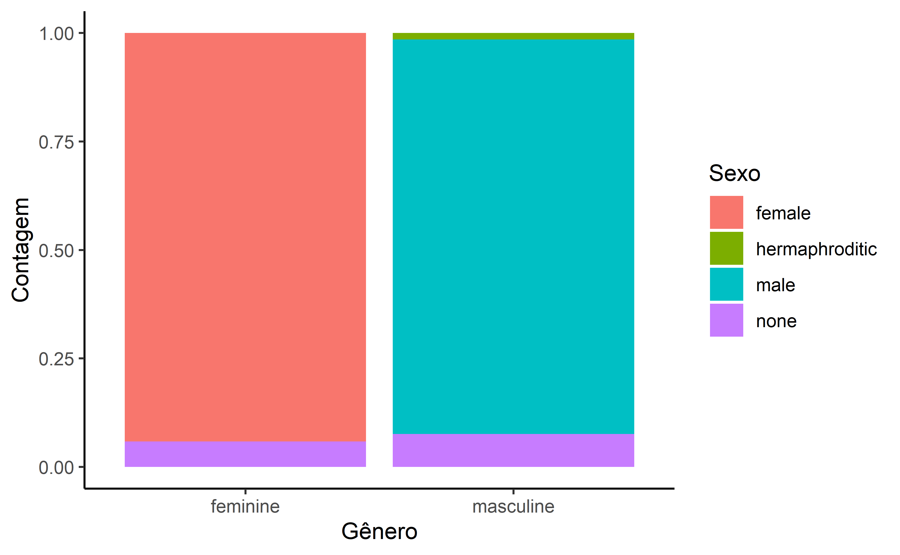
Dica
labs()theme_
Exercício 5
Recrie o gráfico abaixo:
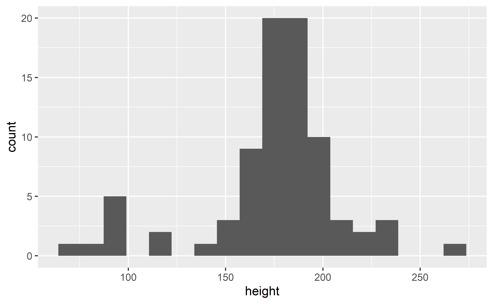
Dica
bins=18
Exercício 6
Transforme o gráfico anterior para que ele se pareça com a imagem abaixo:
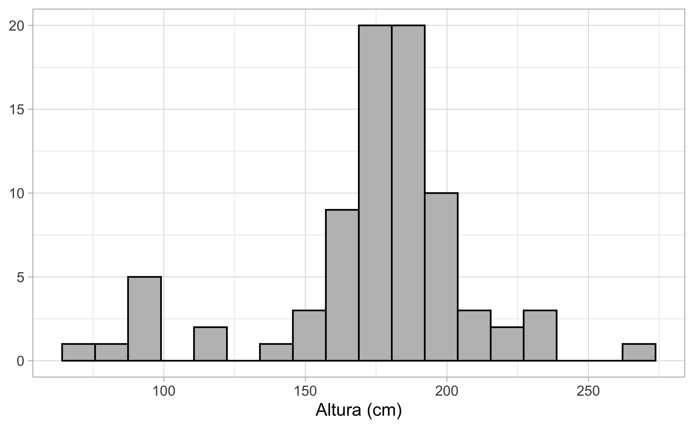
Dica
color=fill=labs()theme_light()
Exercício 7
Construa o gráfico abaixo:
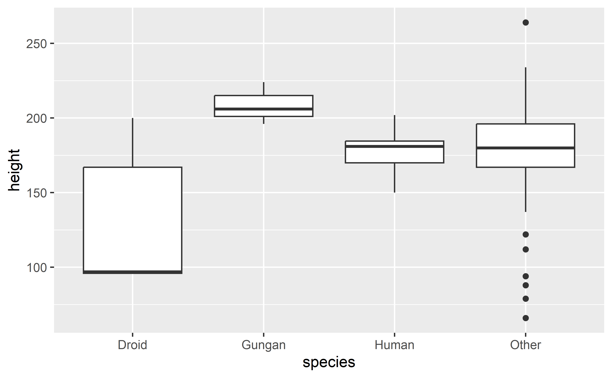
Dica
drop_na()fct_lump_n()
Exercício 8
Modifique o código do gráfico anterior para que ele fique com essa aparência:
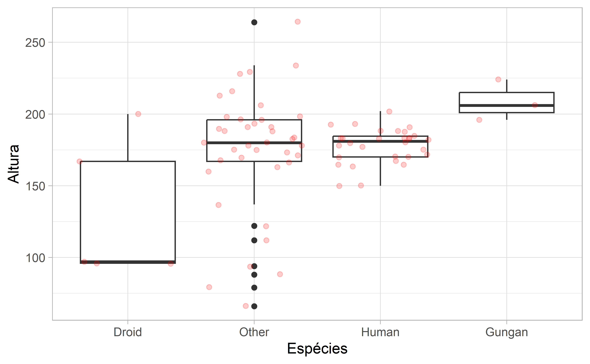
Dica
Segundo bloco de exercícios
Banco de dados
A partir do exercício 9, o banco de dados gapminder vai ser utilizado. gapminder contém informações sobre expectativa de vida, população e PIB per capita de 142 países entre os anos de 1952 e 2007.
Para saber mais sobre esses dados, utilize:
?gapminder
Para dar uma olhada nas variávies dos bancos de dados, você pode utilizar o comando a seguir:
glimpse()
Exercício 9
Reproduza o gráfico a seguir, que só contém dados do ano de 2007:
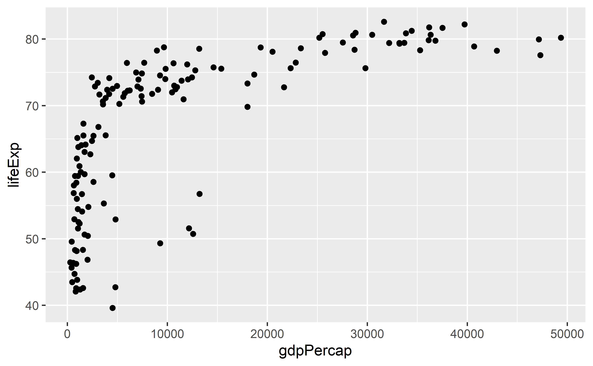
Exercício 10
Modifique o código do exercício anterior para que o gráfico ganhe as características abaixo:
Construa um gráfico como este (os dados referem-se somente ao ano de 1952):
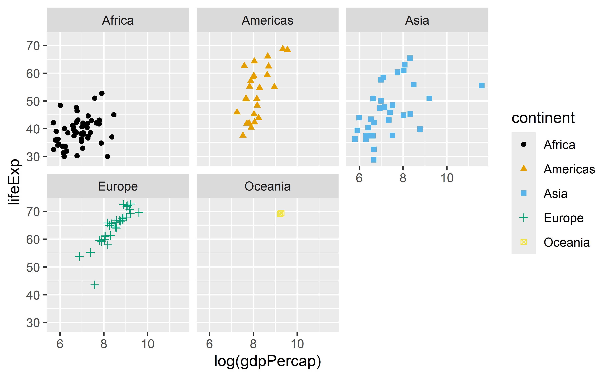
Exercício 12
Modifique o gráfico do exercício acima para que ele se pareça com a imagem a seguir:
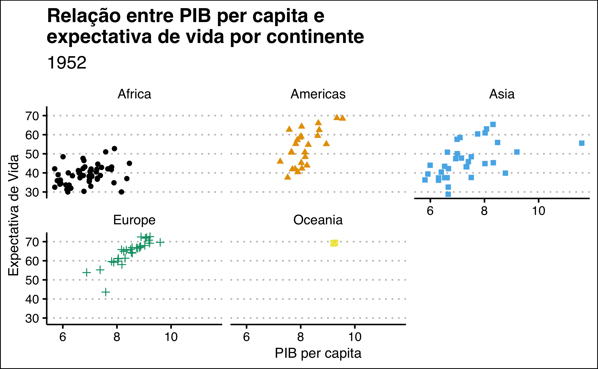
Dica
labs()theme_clean()theme()
Exercício 13
Crie um gráfico como o seguinte:
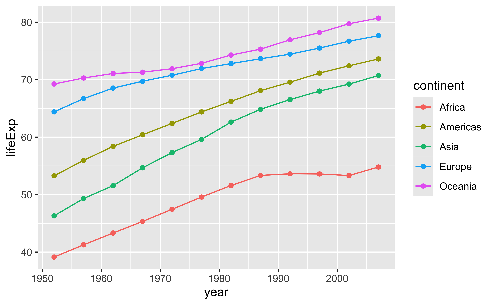
Exercício 14
Modifique o código anterior para o gráfico gerado se assemelhe a figura abaixo:
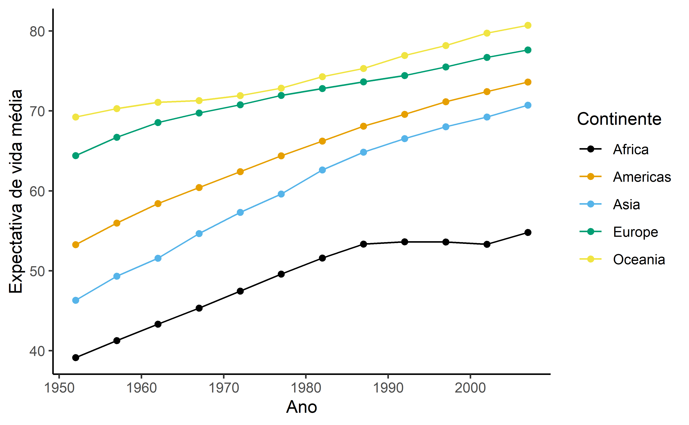
Dica
Sem dicas dessa vez
Código fonte
---title: "Introdução ao R"subtitle: "Visualização de dados - Exercícios"sidebar: falseformat: htmleditor_options: chunk_output_type: consoleout-width: 70%---## Introdução```{r}#| include: falsesource("./_common.R")```{width="102"}Neste blocos de exercícios você vai utilizar o pacote `ggplot2` para construir os seguintes gráficos:- Gráfico de barras (barplot)- Histograma (histogram)- Diagrama de caixa (boxplot)- Gráficos de dispersão (scatter plot)- Séries temporais (time series)### Pacotes necessáriosPara fazer estes exercícios, acione os pacotes a seguir:```{r}#| label: setup#| warning: false#| message: falselibrary(tidyverse)library(gapminder)library(ggthemes)theme_set(theme_grey())```Caso ainda não tenha instalado os pacotes, use:```{r}#| eval: falseinstall.packages("tidyverse")install.packages("gapminder")install.packages("ggthemes")```## Primeiro bloco de exercícios### Banco de dadosEntre os exercícios 1 e 8, o banco de dados `starwars` vai ser empregado. `starwars` contém características de 87 personagens da franquia criada por George Lucas.Para saber mais sobre esses dados, utilize:```{r}#| eval: false#| echo: true?starwars```Para dar uma olhada nas variávies dos bancos de dados, você pode utilizar o comando a seguir:```{r}#| eval: false#| echo: trueglimpse()```Tente executar a função `glimpse()` no banco de dados `starwars`.### Exercício 1Reproduza o seguinte gráfico:```{r}starwars |>drop_na(sex) |>ggplot(aes(sex) ) +geom_bar()```::: callout-tip```{r}#| echo: true#| eval: falsedrop_na()```:::### Exercício 2Modifique o gráfico do exercício anterior, de modo que ele fique como na imagem a seguir:```{r}#| echo: falsestarwars |>drop_na(sex) |>ggplot(aes(fct_infreq(sex), fill = sex) ) +geom_bar() +labs(x ="Sexo",y ="Contagem" ) +theme_classic() +theme(legend.position ="none" )```::: callout-tip```{r}#| echo: true#| eval: falsefct_infreq()fill =labs()theme_classic()theme()```:::### Exercício 3Refaça o gráfico a seguir:```{r}starwars |>drop_na(sex,gender) |>ggplot(aes(gender, fill = sex) ) +geom_bar(position ="fill" ) ``````{r}#| echo: true#| eval: falsedrop_na()fill =position =```### Exercício 4Modifique o gráfico do exercício anterior, de modo que ele fique como na imagem a seguir:```{r}starwars |>drop_na(sex,gender) |>ggplot(aes(gender, fill = sex) ) +geom_bar(position ="fill" ) +labs(x ="Gênero",y ="Contagem",fill ="Sexo" ) +theme_classic()```::: callout-tip```{r}#| echo: true#| eval: falselabs()theme_```:::### Exercício 5Recrie o gráfico abaixo:```{r}#| warning: falsestarwars |>ggplot(aes(height) ) +geom_histogram(bins =18 ) ```::: callout-tip```{r}#| echo: true#| eval: falsebins =18```:::### Exercício 6Transforme o gráfico anterior para que ele se pareça com a imagem abaixo:```{r}#| warning: falsestarwars |>ggplot(aes(height) ) +geom_histogram(bins =18,color ="black", fill ="gray" ) +labs(x ="Altura (cm)",y =NULL ) +theme_light() ```::: callout-tip```{r}#| echo: true#| eval: falsecolor =fill =labs()theme_light()```:::### Exercício 7Construa o gráfico abaixo:```{r}starwars |>drop_na(species, height) |>mutate(species =fct_lump_n(species, n =3) ) |>ggplot(aes(species, height) ) +geom_boxplot() ```::: callout-tip```{r}#| echo: true#| eval: falsedrop_na()fct_lump_n()```:::### Exercício 8Modifique o código do gráfico anterior para que ele fique com essa aparência:```{r}#| echo: falsestarwars |>drop_na(species, height) |>mutate(species =fct_lump_n(species, 3) ) |>ggplot(aes(fct_reorder(species, height), height) ) +geom_boxplot() +geom_jitter(color ="red",alpha =0.2 ) +labs(x ="Espécies",y ="Altura" ) +theme_light()```::: callout-tip```{r}#| eval: falsefct_reorder()geom_jitter()labs()theme_light()```:::### Segundo bloco de exercícios#### Banco de dadosA partir do exercício 9, o banco de dados `gapminder` vai ser utilizado. `gapminder` contém informações sobre expectativa de vida, população e PIB per capita de 142 países entre os anos de 1952 e 2007.Para saber mais sobre esses dados, utilize:```{r}#| eval: false#| echo: true?gapminder```Para dar uma olhada nas variávies dos bancos de dados, você pode utilizar o comando a seguir:```{r}#| eval: false#| echo: trueglimpse()```### Exercício 9Reproduza o gráfico a seguir, que só contém dados do ano de 2007:```{r}gapminder |>filter(year ==2007) |>ggplot(aes(gdpPercap, lifeExp) ) +geom_point() ```### Exercício 10Modifique o código do exercício anterior para que o gráfico ganhe as características abaixo:```{r}gapminder |>filter(year ==2007) |>ggplot(aes(log(gdpPercap), lifeExp) ) +geom_point(aes(color = continent, shape = continent) ) +labs(x ="PIB per capita",y ="Expectativa de vida",color ="Continente",shape ="Continente",title ="Relação entre expectativa de vida e PIB per capita:",subtitle ="Distribuição por continente em 2007" ) +scale_color_colorblind() +theme_classic()```::: callout-tip```{r}#| echo: true#| eval: falselog()labs()theme_classic()scale_color_colorblind()```:::### Exercício 11Construa um gráfico como este (os dados referem-se somente ao ano de 1952):```{r}gapminder |>filter(year ==1952) |>ggplot(aes(log(gdpPercap) , lifeExp) ) +geom_point(aes(color = continent, shape = continent)) +scale_color_colorblind() +facet_wrap(~ continent)```### Exercício 12Modifique o gráfico do exercício acima para que ele se pareça com a imagem a seguir:```{r}gapminder |>filter(year ==1952) |>ggplot(aes(log(gdpPercap), lifeExp) ) +geom_point(aes(color = continent, shape = continent)) +labs(x ="PIB per capita",y ="Expectativa de Vida",title ="Relação entre PIB per capita e \nexpectativa de vida por continente",subtitle ="1952" ) +scale_color_colorblind() +theme_clean() +theme(legend.position ="none") +facet_wrap(~ continent)```::: callout-tip```{r}#| echo: true#| eval: falselabs()theme_clean()theme()```:::### Exercício 13Crie um gráfico como o seguinte:```{r}#| warning: false#| message: falsegapminder |>summarise(lifeExp =mean(lifeExp),.by =c(continent, year) ) |>ggplot(aes(year, lifeExp, color = continent) ) +geom_line() +geom_point() ```### Exercício 14Modifique o código anterior para o gráfico gerado se assemelhe a figura abaixo:```{r}#| echo: false#| warning: false#| message: falsegapminder |>summarise(lifeExp =mean(lifeExp),.by =c(continent, year) ) |>ggplot(aes(year, lifeExp, color = continent) ) +geom_line() +geom_point() +labs(x ="Ano",y ="Expectativa de vida média",color ="Continente" ) +scale_color_colorblind() +theme_classic()```::: callout-tipSem dicas dessa vez:::